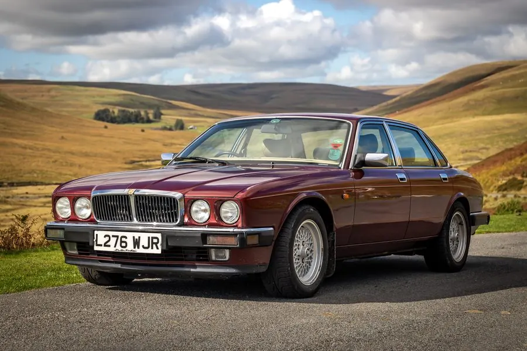
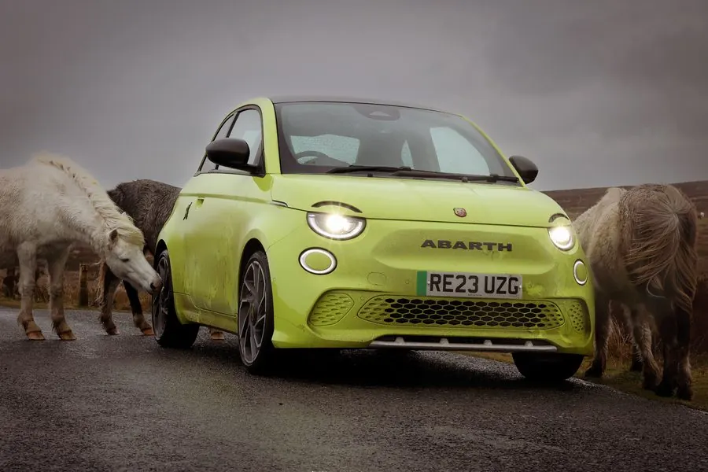
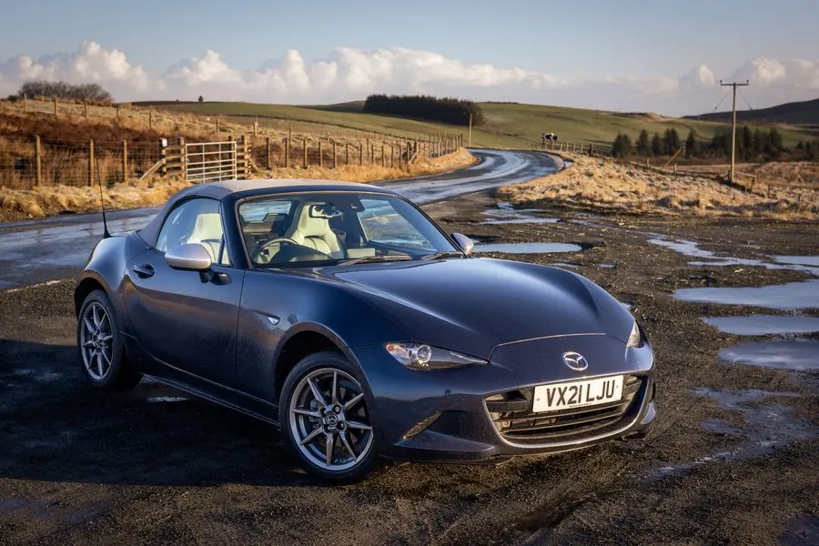

Journalism & content
Cars
I’ve been writing about cars since 2013 – reviews, news, buying advice, features and everything in between. I’ve driven hundreds of them, from ordinary hatchbacks to seriously expensive performance cars, and spent years answering the questions people actually ask when they’re about to spend their money.
Then I switched sides. At JLR, I’ve written for Range Rover, Defender, Discovery and Jaguar – in apps, on websites and inside the cars themselves – and worked on the Jaguar rebrand from the inside. It’s taught me how a brand’s voice is built, and how to protect it when everyone has an opinion.
Through all of it, my favourite work has been the stuff that genuinely helps people. Should you buy an EV? Will it fit your garage? Sometimes the answer is a Ferrari. More often, it’s a Honda Jazz.

Where I’ve worked
Experience
Selected work
Portfolio
Words and pictures
Photography
As well as writing, I like to take the photographs. I can provide a full editorial package: words, images, social media – the lot.



Commissions welcome
Work with me
I’m here to take on commissions and collaborate with editors, agencies and brands. If you’ve got an idea in mind that you think I could help with, I’d be delighted to chat about it.
Get in touch about a commissionFeatures, reviews & buying guides
Clear, honest, reader-first writing on cars – filed to deadline.
Brand copy & UX microcopy
Words for apps, configurators, emails and websites – written in your brand’s tone of voice.
Content strategy & SEO
Editorial planning and search-led content that builds organic traffic without a huge budget.
Newsletters & community
Newsletters and group communications people actually open.
Comment & spokesperson
Clear, confident comment on EVs and car buying for broadcast and press.
Words & pictures
Copy and photography delivered together as one editorial package.
Things people ask me
FAQs
What do you think of electric cars?
I’m a big fan of electric cars and I’ll happily tell anyone who’ll listen that my Hyundai Kona Electric is the best – and most sensible – car I’ve ever bought. It’s incredibly cheap to run, easy to drive and needs less maintenance than anything else I’ve owned (including a push bike).
They’re not for everyone – I wouldn’t recommend an EV to anyone who can’t charge at home. But given a fair chance, I think a lot of car buyers would be better off with one.
I’m always happy to chat about whether an electric car is right for you – just drop me a message.
What’s the most common mistake people make when buying a car?
Going in like they’re heading into battle.
There’s a widespread assumption that the salesperson is the enemy – someone to outsmart, haggle with, keep at arm’s length. And yes, there are bad ones out there.
But most salespeople genuinely want to put you in the right car. That’s how they build a reputation, get referrals and sleep at night.
It’s easier than ever to do your research – know your budget and what you’re looking for – but go in with an open mind and a bit of warmth. Build a rapport and you’ll find the whole process easier than if you treat them like the enemy.
Buying a car should be exciting. Enjoy it.
What’s the best car you’ve ever driven?
On paper, I should say something suitably impressive – maybe the Rolls-Royce Phantom I took to Vienna, or the Ferrari GTC4Lusso that nearly got me arrested in Italy.
But honestly, I like an underdog.
I’m sad that I’ve never owned a Kia Picanto. Oh, and I love a Mazda MX-5. I’ve owned one of each generation. They’re about as exciting as it gets for me.
What’s the worst car you’ve ever owned?
I’ve owned some genuine duffers over the years, but the scariest was an old Porsche Boxster S with 140,000 miles on the clock.
I was going through my “meet the heroes” era and bought a BMW 540i that I just couldn’t get excited about. I chucked it on Facebook Marketplace and someone offered their Boxster as a direct swap.
I’d always wanted one so it was a no-brainer. We met at a motorway services on the M6 on a cold December morning and swapped keys – no real inspection, no negotiation, little common sense. It was a way out of a BMW I didn’t love.
It was wonderful in some ways, but my local Porsche specialist booked me a quarterly appointment in his diary. Each visit was expensive, and the car rarely lasted a full three months without needing attention. I soon sold it and bought another MX-5.
Let’s talk.
Commissions, collaborations or a chat about cars? I’d love to hear what you’re working on.